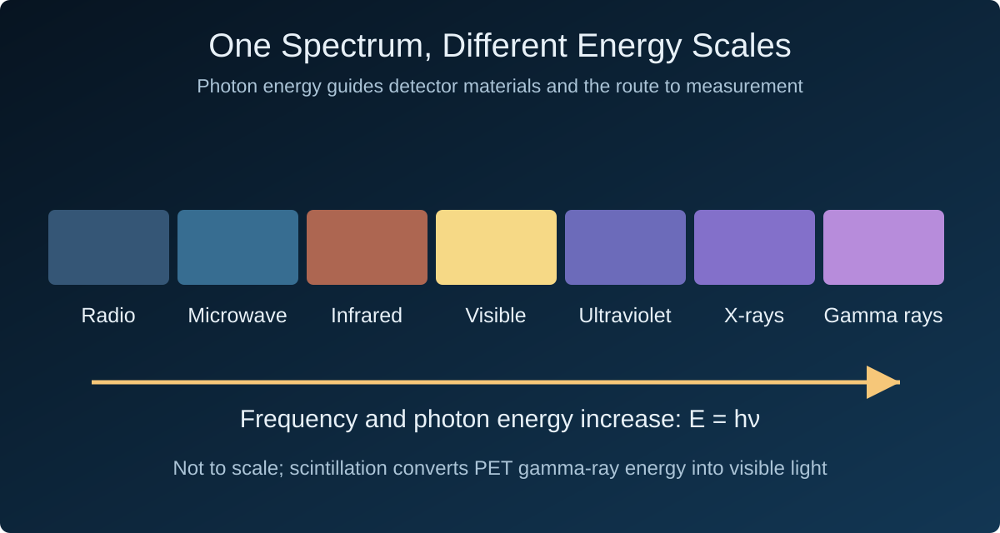
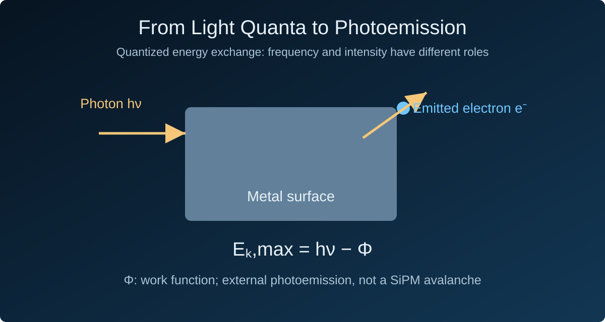
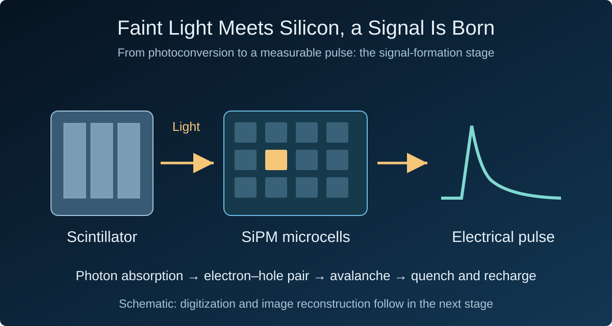

Faint Light Meets Silicon, a Signal Is Born
From Continuous Light to Discrete Energy Exchange
Maxwell's electromagnetic theory describes wave propagation, while energy exchange between light and matter also requires a quantum description. Einstein explained the photoelectric effect using light quanta: each photon has energy E = hν. Increasing intensity generally increases photon number rather than the energy per photon. This distinction makes faint-light measurement a question of discrete events.
Why the Photoelectric Effect Became Evidence for Quantum Theory
The photoelectric effect connects three measurable quantities: optical frequency, intensity, and emitted-electron energy. Einstein used light quanta to explain their relationship in 1905. Millikan's precision experiments verified the law in 1916, turning a conceptual question into predictions tested by controlled measurements.
Under ordinary single-photon emission conditions, raising the intensity of below-threshold light does not let an electron accumulate brightness until it escapes. Above threshold, frequency changes the maximum electron energy, while intensity mainly changes the number emitted. Faint-light detection inherits this distinction: can an individual photon be absorbed, and how many photons from an event are recorded?
Distinguishing Gamma Photons from Scintillation Light
In PET scintillation detection, the crystal receives deposited gamma-ray energy and emits many lower-energy visible photons. The SiPM primarily receives these scintillation photons; a 511 keV photon is not simply sent into an ordinary silicon optical pixel. Scintillation and SiPM photoconversion are successive but distinct processes.

For the gamma photons' origin and coincidence geometry, see It All Begins with Annihilation Light.
A Crystal Turns Energy Deposition into a Population of Photons
After gamma-ray energy is deposited in a scintillator, excitation and energy migration lead to photon emission at luminescent centres. Photon yield, spectrum, and emission-time distribution depend on the material. Some energy enters non-radiative channels, and only part of the emitted light reaches the sensor.
Light yield affects the available photon population; emission kinetics shape signal timing; the spectrum must match the sensor response. Crystal, surface finish, reflector, and coupling therefore contribute together to the detector response.
Equal Energy Deposits Still Produce Statistical Fluctuations
Repeated events with equal input do not produce identical detected photon counts. Emission, collection, and triggering involve probabilities. In an independent Poisson counting model, a mean count N has standard deviation √N and relative fluctuation about 1/√N. This explains why additional effective counts can improve precision.
For example, increasing the mean from N to 4N halves the relative statistical fluctuation in this model. Material response, collection variations, and correlated noise add other contributions in practice. The ideal relation helps distinguish collecting more information from merely amplifying the same output; it is not a prediction of the complete energy resolution.
The Photoelectric Effect: How Light Transfers Energy
External Photoemission from a Metal
An electron can escape a metal surface when the photon supplies enough energy to overcome the work function. Its maximum kinetic energy is Eₖ,max = hν − Φ. The frequency threshold and frequency-dependent electron energy were central to the light-quantum explanation. A photomultiplier photocathode uses external photoemission, followed by amplification through dynodes.

Charge-Carrier Generation in Silicon
Photon absorption in a semiconductor can generate an electron-hole pair. The device structure and electric field separate the carriers to form a current. An electron need not leave the material as it would in a metal photocathode. Light becoming electricity means that absorbed photon energy triggers a charge response, not that the photon itself becomes an electron.
From Energy Bands to a Junction: Collecting Charge
Silicon's band structure constrains electronic energy states. Absorbing a sufficiently energetic photon can excite an electron into the conduction band and leave a hole in the valence band. A hole is a missing-electron state that participates in transport. An internal electric field moves the two carrier types in opposite directions, allowing local absorption to produce an external electrical response.
Carrier generation is only the first step. Absorption depth, recombination, transport, and access to an effective collection or multiplication region all influence detection. Device design connects the optical entry surface and electric-field distribution to the microscopic path followed by charge.
A Shared Name Requires Attention to Energy Scale
Photoemission at a metal photocathode, photogenerated carriers in silicon, and gamma-ray photoelectric absorption in a crystal involve energy transfer to electrons in different environments. For a SiPM, the relevant stage is scintillation-light absorption followed by avalanche triggering. Varying wavelength, bias, or coupling lets experiments examine these stages separately.
From Quantum Insight to Testable Measurement
Light exhibits interference and diffraction while detection records discrete absorption events. Detector design does not choose between wave and particle descriptions; it specifies what the experiment records: an absorption, a carrier trigger, or a pulse formed by many microcells. Response measurements, dark-noise studies, and calibration test the interpretation.
Turning a Trigger into a Comparable Reading
An experiment records the combined device and electronics response. Comparing sensors requires specifying wavelength, incident light, temperature, bias, triggering, and integration time. Light arriving at the sensitive surface must also be characterized, so that pulse differences have a physical interpretation.
A basic sequence measures the dark baseline, records charge spectra under stable weak pulsed illumination, and then increases illumination. It asks what the device outputs without light, what faint light adds, and whether stronger light still produces proportional response. These observations establish a calibration basis for energy and timing measurements.
SiPM: Amplifying a Faint Trigger into a Signal
Microcells, Geiger Avalanches, and Quenching
A SiPM contains many microcells connected in parallel. Each combines a Geiger-mode avalanche photodiode with a quenching element. A carrier generated by photon absorption can trigger an avalanche in the high-field region, producing a readable pulse. The avalanche must then be quenched and the bias restored before the microcell can respond again.

Coupling: Not All Scintillation Light Reaches Silicon
Optical coupling, reflection and propagation, and the sensor response at the emission wavelength determine effective light collection. Gain alone does not characterize a SiPM: photon detection efficiency incorporates material response, active-area fill factor, and avalanche triggering probability.
Signal and Noise: An Avalanche Need Not Begin with Light
Thermally generated carriers can trigger avalanches and produce dark counts; crosstalk and afterpulsing add correlated responses. Temperature, overvoltage, and readout conditions affect performance. An electrical pulse therefore does not unconditionally prove that a photon arrived. Dark measurements, gain calibration, and statistical analysis are needed to characterize signal, noise, and uncertainty.
Dynamic Range: Microcells Are Finite
When many photons arrive within a short interval, microcells may not have recharged. Pulse amplitude then ceases to scale simply with incident photon number. Finite microcell count, recovery time, and saturation must be considered when assessing energy response and counting capability.
Overvoltage Connects Amplification to Operating Conditions
Overvoltage is reverse bias above breakdown. It affects avalanche charge, gain, and triggering probability. The bias supply provides most of the charge released in an avalanche; the photon supplies the trigger. Amplification makes an event easier to read without increasing the number of photons that reached the device.
Higher overvoltage also changes dark or correlated noise, so operating-point selection balances efficiency, noise, and recovery. Temperature changes the breakdown voltage and therefore the overvoltage at fixed bias. Temperature records, appropriate bias compensation, and calibration help keep responses comparable.
A Single-Photoelectron Charge Spectrum Gives the Output a Scale
Under suitable weak illumination and readout conditions, integrated-charge spectra can show peaks for zero, one, two, or more microcell responses. Peak spacing supplies an avalanche-charge scale for estimating gain. Single-photoelectron is the usual response-unit terminology, but crosstalk and afterpulsing prevent a universal one-to-one interpretation as incoming photons.
Calibration also includes electronics gain, baseline, and integration window. A short window can miss charge; a long one can include additional noise or delayed responses. Charge spectra, dark records, and reference measurements of incident light together distinguish gain from photon detection efficiency.
Energy and Timing: Two Kinds of Information in One Signal
Integrated charge helps estimate the response size, while the leading edge carries event-timing information. Similar energy deposits can have different onset times because of photon paths, emission kinetics, and stochastic device response. Energy and timing therefore require their own calibration and uncertainty analysis.
Detector optimization connects light collection, position dependence, operating-point stability, noise control, and readout. Each can be tested by varying conditions and comparing repeated measurements. Silicon produces a readable signal; measurement establishes what that signal can reliably mean.
A Signal Is Born; Measurement Continues
This feature ends at the measurable electrical pulse: photon energy exchange produces a semiconductor response that is amplified, quenched, and read out. The next question is how to record pulse timing and amplitude and estimate event parameters with a model. MVT addresses that digitization stage; it does not replace photoconversion or remove sensor noise and response limits.